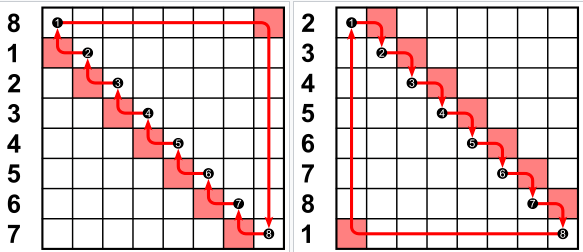

Discrete Fourier Transform
이산 푸리에 변환에 대해 알아보자.
Cyclic shift operator \(\bf{B}\)
The matrix \(\bf{B}\) representing the periodic shift is
5×5 Matrix{Int64}:
0 0 0 0 1
1 0 0 0 0
0 1 0 0 0
0 0 1 0 0
0 0 0 1 0This matrix is cyclic shift
note: \(\bf{B}\) is orthogonal matrix (직교행렬: 전치행렬이 역행렬인 행렬 \(\bf{A}\bf{A}'=\bf{A}'\bf{A}=\bf{I}\))
- Cyclic shift가 뭔지는 모르겠지만 뭔가 모양새가 단위행렬을 한 칸씩 뒤에서 앞으로 밀어놓은 느낌이다.
What is Cyclic shift?
ref: Cyclic shift의 개념
a circular shift is the operation of rearranging the entries in a tuple, either by moving the final entry to the first position, while shifting all other entries to the next position, or by performing the inverse operation. A circular shift is a special kind of cyclic permutation, which in turn is a special kind of permutation.
위를 요약하자면 조합론에서 순환이동이란 튜플의 항목을 재정렬하는 작업이라고 한다. 마지막 element를 첫번째 위치로 이동하고 다른 모든 element들은 다음 위치로 이동하는 것.

예를들어 (a, b, c, d)에 ciclic shift를 반복적으로 적용하면 다음과 같다.
0\((a, b, c, d)\) # before cyclic shift (origin)1\((d, a, b, c)\) # 1step2\((c, d, a, b)\) # 2step3\((b, c, d, a)\) # 3step4\((a, b, c, d)\) # 4step –> origin
cyclic shift를 4번 반복하니까 원래 변환 전 원래 튜플로 돌아왔다.
예제
5×5 Matrix{Int64}:
1 0 0 0 0
0 1 0 0 0
0 0 1 0 0
0 0 0 1 0
0 0 0 0 1- (ex1) Define \(s\) as
결과: \([1,2,3,4,5] \to [5,1,2,3,4]\)
- 맨 뒤에 5가 앞으로 나오고 나머지 값들은 한칸씩 뒤로 밀렸다.
- 위에서 배운대로라면 5번 쉬프트되면 자기자신으로 돌아오지 않을까?
- \(\bf{B}^2\) 에 \(s\)를 곱하면?
결과: \([1,2,3,4,5] \to [5,1,2,3,4] \to [4,5,1,2,3]\)
- \(\bf{B}^5\)에 \(s\)를 곱하면?
예상대로라면 원래 \(s\)인 \([1,2,3,4,5]\)로 돌아올 것 같다.
Thus we can interprete the matrix \(\bf{B}\) as cyclic shift operator such that
\[\bf{B}_n = s_{n-1}\]
for \(n = 1,\dots,N-1\) and \(\bf{B}_{s_0}=s_N\)
note : \(\bf{B}\)는 시계열에서 다루는 backshift operator과 비슷함.
(참고) backshift operator(후방이동) 연산자 \(\bf{B}\)는 시계열 시차를 다룰 때 유용한 표기법 장치이다. (\(B_{y_t} = y_{t-1})\)
시차변수 만들 때 완전 꿀팁인듯?
DFT
The matrix \(\bf{B}\) can be expressed as
\(\bf{B} = DFT^* \cdot \Lambda \cdot DFT\)
where DFT is unitary and symmetric matrix and \(\Lambda\) is diagonal matrix.
Spectral components and Frequencies
we remark:
(1) Spectral components: For \(k = 0,1,2,\dots, N-1\), the \(k\)-th column of \({\bf DFT}^\ast\) is defined by
\[\Psi_k:=\frac{1}{\sqrt{N}}\begin{bmatrix} 1 \\ e^{j\frac{2\pi}{N}k} \\ e^{j\frac{2\pi}{N}2k} \\ e^{j\frac{2\pi}{N}3k} \\ \dots \\ e^{j\frac{2\pi}{N}(N-1)k} \end{bmatrix}.\]
Note that \(\Psi_k\) can be also interpreted as \(\ell\)-th eigenvector of \({\bf A}\) correspoding \(\lambda_\ell = e^{-j\frac{2\pi}{N}k}\). Those eigenvectors
\[\big\{{\bf 1},\Psi_1,\Psi_2, \dots, \Psi_{N-1}\big\}\]
form a complete orthonomal basis of \(\mathbb{C}^N\). These vectors are called spectral components.
(2) Frequencies: The diagonal entries of \({\bf \Lambda}\) are the eigenvalues of the time shift \({\bf B}\). In Physics and in operator theory, these eigenvalues are the frequencies of the signal. In DSP it is more common to call frequencies
\[\Omega_k=\frac{-1}{2\pi j}\ln\lambda_k=\frac{-1}{2\pi j}\ln e^{-j \frac{2\pi}{N}k}=\frac{k}{N}, \quad k=0,1,2,\dots,N-1.\]